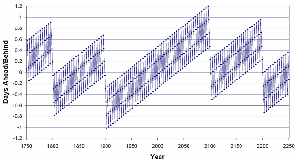

Leap Years
..., 2008, 2012, 2016, 2020, 2024, 2028, ... etc
Leap Year
- A normal year has 365 days.
- A Leap Year has 366 days (the extra day is the 29th of February).
How to know if it is a Leap Year:
| Leap Years are any year that can be exactly divided by 4 (such as 2016, 2020, 2024, etc) | |||
| except if it can be exactly divided by 100, then it isn't (such as 2100, 2200, etc) | |||
| except if it can be exactly divided by 400, then it is (such as 2000, 2400) | |||
Try it here:
Why?
Because the Earth rotates about 365.242375 times a year ...
... but a normal year is 365 days, ...
... so something has to be done to "catch up" the extra 0.242375 days a year.
So every 4th year we add an extra day (the 29th of February), which makes 365.25 days a year. This is fairly close, but is wrong by about 1 day every 100 years.
So every 100 years we don't have a leap year, and that gets us 365.24 days per year (1 day less in 100 year = -0.01 days per year). Closer, but still not accurate enough!
So another rule says that every 400 years is a leap year again. This gets us 365.2425 days per year (1 day regained every 400 years = 0.0025 days per year), which is close enough to 365.242375 not to matter much.
So, Which Are and Which Aren't?
So 2000 and 2400 are leap years but 1800, 1900, 2100, 2200 and 2300 are not.
Apart from that, every year divisible by 4 (2012, 2016, 2020, 2024, etc.) is a leap year.
How far away each year is from the average

Example: look just before 2100, the worst year is 1.2 days ahead, but because 2100 is not a leap year they all get adjusted back by 1 day.
So this keeps us pretty close, and any other adjustments can be done way in the future (when the Earth may be rotating a little slower, anyway!)
Only since 1582 (Gregorian Calendar)
These leap year rules were introduced in 1582 by the Gregorian Calendar, named after Pope Gregory XIII.
(It replaced the old Julian Calendar by Julius Caesar that only has one rule of a leap year every 4th year, and is now about 13 days behind our current date.)